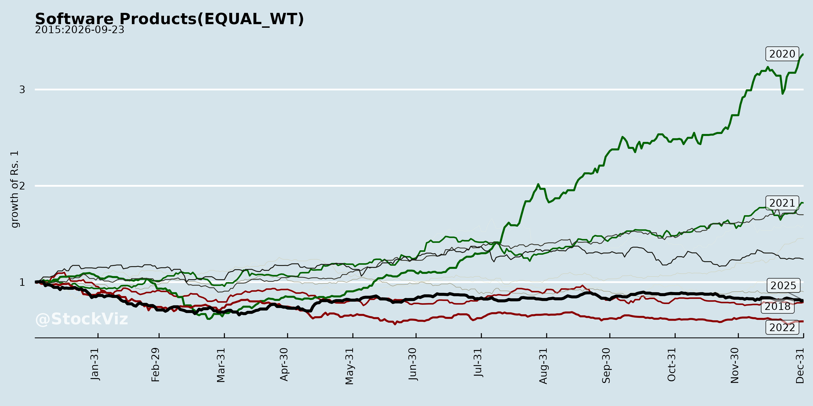
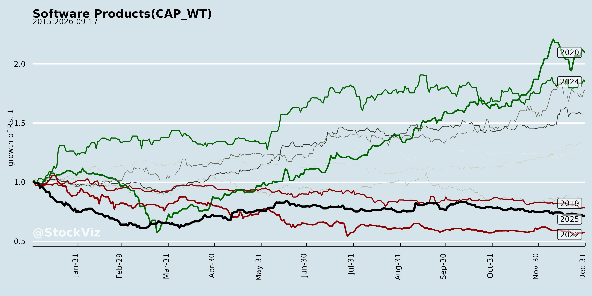
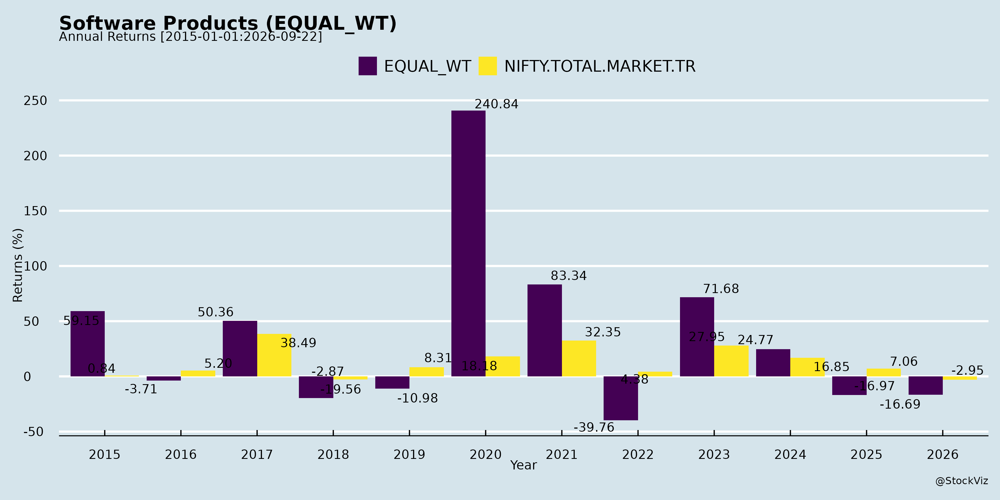
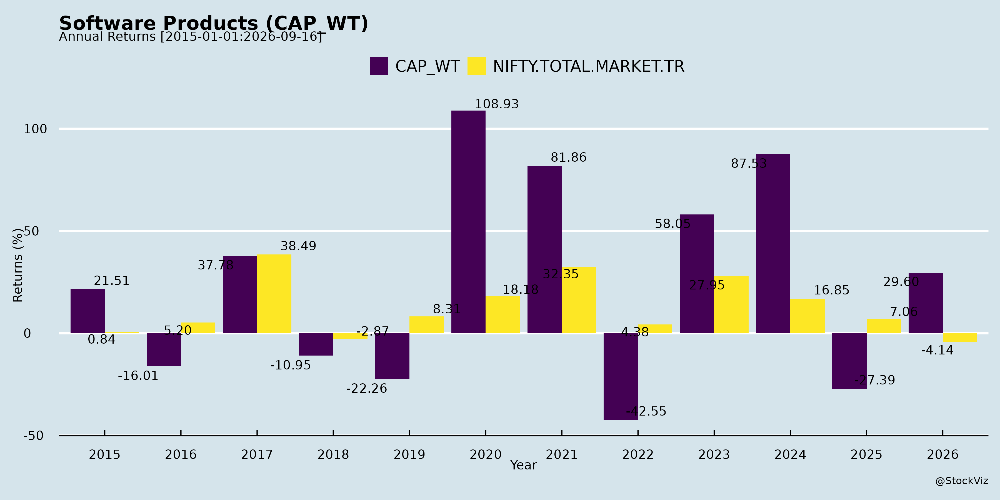
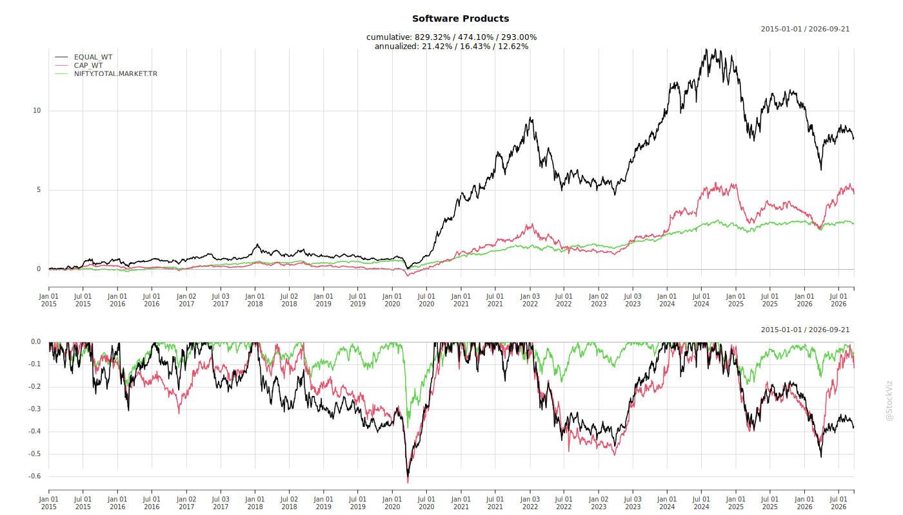
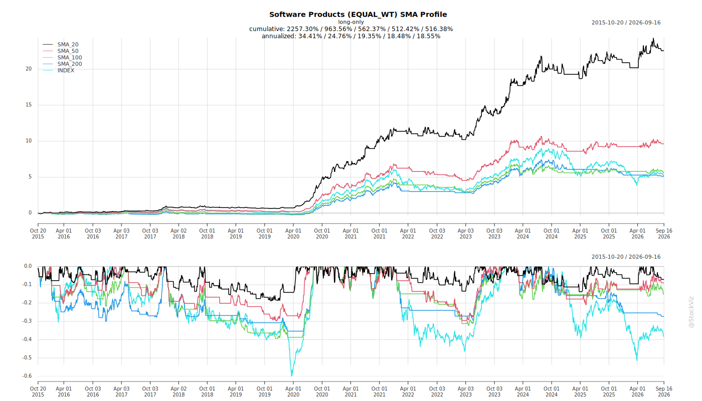
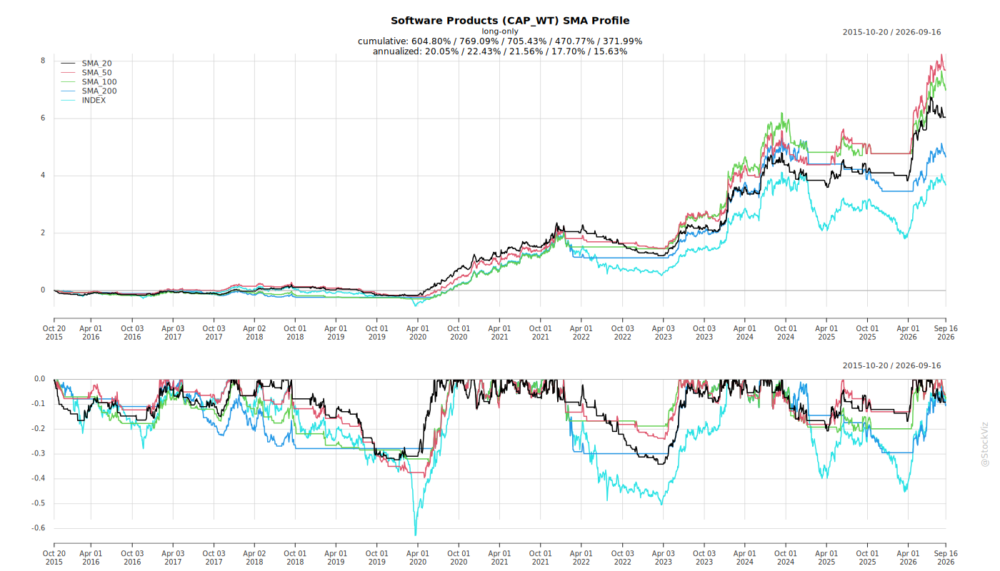
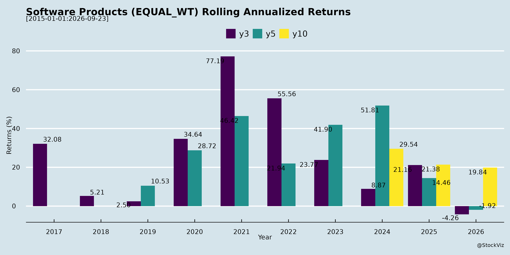
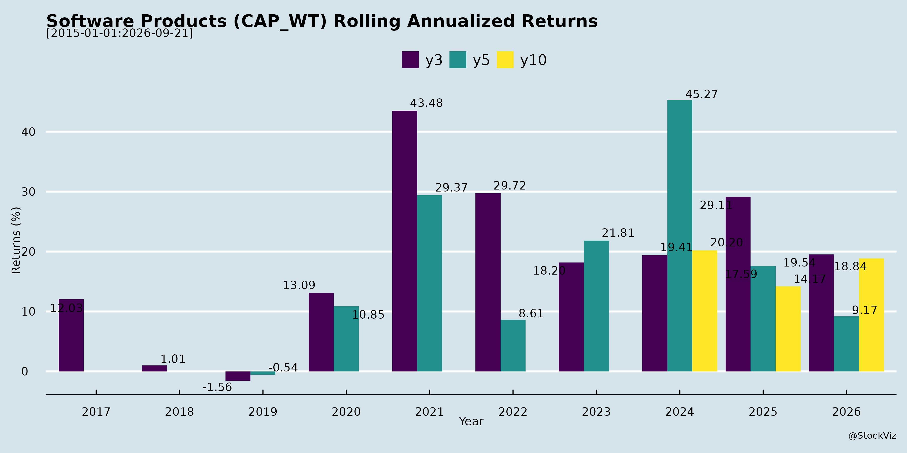

Annual Returns




Cumulative Returns and Drawdowns

SMA Scenarios


Current Distance from SMA
Rolling Returns


EBIT (% of Industry Total)
Revenue (% of Industry Total)
AI Summaries
Analyst
asof: 2025-11-27
Summary Analysis of Indian Software Products Sector
Based on Q2/H1 FY26 earnings transcripts from key players (IRIS Business Services, MapmyIndia/C.E. Info Systems, Nucleus Software, Subex, Unicommerce eSolutions, Xelpmoc Design & Tech; supplemented by filings from others like Tanla, Virinchi), the sector shows resilience amid investments in AI/SaaS, but faces execution challenges. Companies emphasize RegTech, SupTech, geospatial/IoT, lending software, e-commerce enablement, and AI-driven products. Overall revenue growth is mixed (e.g., Unicommerce +75% YoY; Nucleus/Xelpmoc flat/declining), with focus shifting to corporate/enterprise from volatile startups. Below is a structured analysis:
Headwinds (Key Challenges)
- Margin Pressures & Investment Drag: Heavy spends on sales/marketing (IRIS: +50% YoY; Nucleus: employee costs up), R&D/AI (MapmyIndia: INR10-15Cr one-off), and product upgrades (Nucleus FinnOne Neo) led to EBITDA dips (IRIS RegTech loss-making; Xelpmoc EBITDA -INR16Cr). Operating leverage lags revenue.
- Slow Deal Conversions & Lumpiness: Regulatory tightening (Nucleus: board-level delays in lending; IRIS: IDEAL bank delays; Subex: PO delays). Revenue lumpiness from contracts (MapmyIndia Q2 GST impact; IRIS SupTech).
- Market/Policy Headwinds: Startup funding slowdown (Xelpmoc: pivot to corporates); ESG mandate delays (IRIS); e-commerce volatility (Unicommerce: Shraddh/festive deferrals).
- Churn & Competition: Enterprise client churn (Unicommerce: ~60 in H1); slow upgrades (Nucleus legacy inertia); unlisted/global rivals (Subex duopoly).
- Governance/Legacy Issues: Board resignations (Subex); legacy cleanups/write-offs (Subex Sectrio; IRIS TaxTech divestment).
Tailwinds (Positive Drivers)
- Strong Order Books & Wins: Robust pipelines (Subex: $15M deals; IRIS: 2 new SupTech logos; MapmyIndia: IOCL INR110Cr/5yrs, Survey of India).
- AI/GenAI & Product Innovation: Widespread adoption (IRIS CARBON AI; MapmyIndia road safety; Unicommerce UniCapture/ShipSense; Subex HyperSense; Xelpmoc RELY/DocuXray pilots).
- Government/Digital Push: SupTech wins (IRIS Qatar; MapmyIndia geospatial for Survey of India/DMRC); e-commerce tailwinds (Unicommerce: 1.1B txn run-rate).
- Balance Sheet Strength: Cash surpluses (IRIS: INR170Cr; MapmyIndia: INR639Cr; Unicommerce: INR63Cr); divestments boosting net worth (IRIS BV to INR92).
- Sector Tailwinds: E-commerce/quick commerce boom (Unicommerce: 72M quick txn run-rate); RegTech TAM $7B@16-17% CAGR (IRIS); geospatial/IoT growth (MapmyIndia).
Growth Prospects
- High-TAM Opportunities: RegTech/SupTech ARR (IRIS: 35% FY26 target); geospatial/IoT (MapmyIndia: FY28 INR1,000Cr); e-commerce SaaS (Unicommerce: USD1.15B TAM, ARR>INR200Cr); lending upgrades (Nucleus FinnAxia/FinnOne Neo).
- SaaS/Recurring Shift: ARR focus (IRIS CARBON +14% H1; MapmyIndia IoT SaaS uptick; Unicommerce 1B+ txn run-rate).
- International/Expansion: US/Europe/ME traction (Nucleus pilots; IRIS CARBON; MapmyIndia JV; Subex renewals).
- Cross-Sell & New Verticals: Platform synergies (Unicommerce Shipway/UniReco overlap>10%); adjacencies (MapmyIndia railways/defense; Xelpmoc AgeTech INR6-14K Cr TAM).
- Outlook: H2 acceleration expected (IRIS/ MapmyIndia seasonal strength); portfolio uplift (Xelpmoc startups: Mihup INR1Cr ARR).
Key Risks
- Execution Risk: Investments not yielding timely ARR (IRIS threshold scale; Nucleus conversions; Xelpmoc breakeven delay).
- Regulatory/Policy Volatility: ESG/lending norms (IRIS/Nucleus slowdowns); geospatial mandates.
- Customer Concentration/Churn: Top-5 clients 27% (Nucleus); enterprise churn (Unicommerce).
- Macro/Competition: Startup winter (Xelpmoc); e-commerce slowdowns; unlisted globals (Subex).
- Financial/Legacy: Negative retained earnings (Subex buyback hurdle); goodwill impairments (Subex INR196Cr); FX/receivables delays (Subex).
- Governance: Board instability (Subex resignations); ESM Stage-1 restrictions (Xelpmoc).
Overall Sector View: Positive momentum in AI/SaaS/govt contracts offsets near-term pressures; growth hinges on conversion/scale (projected 20-30%+ in leaders like Unicommerce/MapmyIndia). Risks tilted toward execution/macro, but strong BS/order books provide buffers. Investors should monitor Q3 deal ramps and margin recovery.
Investor
asof: 2025-11-27
Analysis of Indian Software Products Sector
The provided documents consist of earnings call transcripts and regulatory filings from key Indian software product companies (primarily SaaS-focused): IRIS Business Services (RegTech/SupTech), MapmyIndia (Geospatial/IoT), Nucleus Software (Lending Tech), Subex (Telco Analytics), Unicommerce eSolutions (E-commerce SaaS), and Xelpmoc (AI/Data Science with startup portfolio). These represent a cross-section of the sector, spanning enterprise SaaS, analytics, e-commerce enablement, geospatial, and AI/ML products.
The sector exhibits resilience amid macro headwinds (e.g., funding winter, regulatory caution), with a shift toward corporate clients, ARR focus, AI integration, and govt/telco contracts. Below is a structured analysis of headwinds, tailwinds, growth prospects, and key risks, derived directly from the transcripts/filings.
Headwinds
- Margin Pressures from Investments: Heavy spending on sales/marketing (e.g., IRIS: sales up 50% YoY; MapmyIndia: INR10-15Cr one-off tech outsourcing) and R&D (Nucleus: product enhancements; Xelpmoc: new pilots) leading to EBITDA dips (IRIS RegTech loss-making; Xelpmoc persistent losses).
- Revenue Lumpiness & Delays: Project-based/govt contracts cause volatility (MapmyIndia: Q2 dip due to GST/auto slowdown; IRIS IDEAL: bank delays; Nucleus: slow FinnOne Neo upgrades).
- Pricing/Churn Pressures: E-com volatility (Unicommerce: enterprise churn ~6%, realization down 15%); startup funding winter (Xelpmoc: 100% revenue shift to corporates).
- Regulatory/Decision Delays: Tight norms slow conversions (Nucleus: board-level scrutiny; Subex: policy uncertainties).
- Macro/Geo Uncertainties: Startup slowdown (Xelpmoc), global policy (MapmyIndia: H1B visas minimal impact but noted), festive deferrals (Unicommerce).
Tailwinds
- Strong Order Books & Wins: Robust pipelines (Subex: $15M deals; IRIS: Qatar SupTech; MapmyIndia: IOCL INR110Cr/5yrs, Survey of India).
- SaaS/ARR Momentum: IRIS CARBON ARR +14%; Unicommerce: 1.1B txn run-rate, Shipway ARR ~INR90Cr (+26% QoQ).
- AI/ML Integration: Widespread adoption (Nucleus: AI use cases; Subex: HyperSense AI; Xelpmoc: DocuXray/RELY pilots; MapmyIndia: V2X/traffic mgmt).
- Govt/Digital Push: Contracts in geospatial (MapmyIndia), SupTech (IRIS), telco (Subex).
- E-com/Quick Commerce Boom: Unicommerce: 72M quick commerce run-rate (+50% QoQ); underpenetrated market.
- Balance Sheet Strength: Cash piles (IRIS: INR170Cr; MapmyIndia: INR639Cr; Unicommerce: INR63Cr ops cash).
Growth Prospects
- Market Expansion: Large TAMs – Disclosure mgmt/ESG ($7B, IRIS); E-com enablement ($1.15B, Unicommerce); Geospatial/IoT (MapmyIndia FY28: INR1,000Cr rev); Lending SaaS (Nucleus: 35% ARR target); AgeTech (Xelpmoc: INR7K-14K Cr).
- ARR/Recurring Shift: 50-90% recurring (IRIS/Unicommerce/Nucleus); SupTech/telco renewals (Subex).
- Adjacencies & Int’l: ESG/enterprise depth (IRIS); IoT/traffic (MapmyIndia); Omnichannel/B2B (Unicommerce); AI pilots (Xelpmoc).
- Portfolio Upside: Xelpmoc startups (Mihup: INR1Cr ARR; Woovly: $3.2M ARR); potential IPOs/exits.
- Near-Term Outlook: H2 strength (MapmyIndia/Unicommerce); pilots to revenue (Xelpmoc Q3/Q4); 20-25%+ growth run-rate (MapmyIndia).
| IRIS |
SupTech boost |
INR32Cr (CARBON) |
Single-digit (investing) |
| MapmyIndia |
14.7% H1 YoY |
N/A |
35% H1 |
| Nucleus |
Modest (~5% YoY) |
Stable |
~11% |
| Subex |
4% QoQ |
Flat (ramping) |
Positive ops |
| Unicommerce |
75% Q2 YoY |
INR200Cr+ |
22% |
| Xelpmoc |
Decline (startup shift) |
Portfolio traction |
Negative (breakeven tgt) |
Overall Sector Projection: 15-25% CAGR (SaaS/recurring focus); AI/e-com tailwinds drive re-rating.
Key Risks
- Execution Lag: Investments yield revenue with delay (IRIS/Nucleus: 6-12 months); POC-to-revenue slow (Xelpmoc).
- Client Concentration/Churn: Top-5 ~27% (Nucleus); e-com volatility (Unicommerce: 6% enterprise churn).
- Competition: Globals/unlisted (MapmyIndia: int’l peers; IRIS: early-stage market).
- Regulatory/Macro: Policy delays (Nucleus/Subex); funding winter (Xelpmoc); US visa/election impacts (minor).
- Profitability: Negative retained earnings block buybacks (Subex); legacy impairments (Subex: INR196Cr goodwill).
- Valuation/Exit: Startup portfolio dilution risk (Xelpmoc: 2.6% Privasapien).
Summary
The Indian Software Products sector (SaaS-heavy) is navigating a transitional phase with cautious optimism. Tailwinds from AI/SaaS adoption, e-com/geospatial govt push, and strong cash positions outweigh headwinds like investment drags and lumpiness, positioning for 15-25% growth via ARR expansion and adjacencies (TAMs: $1-7B+). Risks center on execution (lags/churn) and macros, but disciplined focus (corporate shift, pilots) signals resilience. Leaders like Unicommerce/MapmyIndia exemplify scale; laggards (Xelpmoc) pivot to profitability. Overall, sector poised for re-rating on sustained ARR/margins (20%+ EBITDA potential). Investors should monitor Q3 pilots/orders for inflection.
Press Release
asof: 2025-11-27
Analysis of Indian Software Products Sector
Based on the provided press releases from listed companies (AION-Tech Solutions, IRIS Business Services, MapmyIndia, Nucleus Software, Oracle Financial Services Software (OFSS), Ramco Systems, Subex, Tanla Platforms, Unicommerce eSolutions, and Xelpmoc Design and Tech), dated Oct-Nov 2025. These announcements highlight a mix of financial results, partnerships, awards, and product innovations in niches like AI/ML, RegTech/FinTech, logistics/e-commerce SaaS, telecom, payroll/HR, and geospatial tech. The sector shows resilience amid digital transformation but pockets of strain. Overall sentiment is positive (e.g., revenue growth in 60% of financial disclosures), driven by AI adoption and domestic partnerships.
Tailwinds (Positive Drivers)
- AI/ML and Digital Innovation Boom: Widespread AI integration (e.g., ROQIT’s AI logistics, Tanla’s Wisely.ai, Ramco’s AI payroll, Subex’s AI telecom, Xelpmoc’s Data Science/ML focus) aligns with India’s AI push. Awards/recognition (Tanla as Gartner Visionary, Ramco HR awards) boost credibility.
- Domestic Partnerships & Govt. Synergies: Key wins like AION-Tech/ROQIT with Indian Railways (sustainable logistics pilot), MapmyIndia-Zoho (Atmanirbhar Bharat), Unicommerce-Raymond (omnichannel retail), and Tanla-Indosat. Supports “Make in India” narrative.
- Sustainability/ESG Focus: Green initiatives (ROQIT’s EV fleet, Railways’ low-emission network) tap into Net-Zero goals.
- Strong Balance Sheets & Shareholder Returns: Cash-rich firms (IRIS ₹16,966L cash post-TaxTech sale; Tanla ₹881Cr cash, buyback/dividend; OFSS RPO ₹6,349Cr, 43% margins) enable investments. Sequential growth (IRIS 18% QoQ revenue; Tanla 3.6% QoQ).
- Talent & Culture: Certifications (Nucleus Great Place to Work) aid low attrition (OFSS 9-10%).
Headwinds (Challenges)
- Revenue Volatility & Declines: Xelpmoc shows sharp YoY drop (₹16.3M to ₹7.6M Q2 revenue; persistent negative EBITDA ₹-16.1M). IRIS H1 EBITDA down due to sales/marketing ramp-up. OFSS net income -5% QoQ despite revenue +7%.
- Margin Pressures: Higher spends (IRIS marketing; Xelpmoc ESOP/opex) erode profitability. Services margins slip (OFSS services -15% QoQ).
- Execution Delays: Pilots (ROQIT Jan-Feb 2026 rollout) risk slippage; dependency on large deals (OFSS bank wins).
- Market Concentration: Heavy reliance on telcos/banks (Tanla/Indosat, Subex CSPs, Nucleus BFSI) exposes to sector slowdowns.
Growth Prospects
- High (8/10 Rating):
- SaaS/Cloud Expansion: Cloud-native platforms (ROQIT app, IRIS Carbon ARR +14%, Ramco Payce global coverage) target recurring revenue. National rollouts (Railways parcel logistics) unlock massive scale (India’s rail network untapped for parcels).
- Geographic Diversification: Middle East/Africa wins (IRIS Qatar tax authority; OFSS Azerbaijan/Ethiopia/Tanzania; Nucleus 50+ countries). APAC/Europe steady (OFSS 30% US revenue).
- Verticals: FinTech/RegTech (IRIS SupTech +13% YoY), Payroll/HR (Ramco 150+ countries), E-commerce (Unicommerce 7,500+ clients), Geospatial (MapmyIndia APIs/IoT).
- M&A/Liquidity Fuel: IRIS TaxTech sale provides firepower; Tanla’s Meta/Google partnerships signal ecosystem plays.
- Projections: 7-18% YoY growth in revenues (OFSS/Tanla/IRIS); pilots could scale to nationwide (AION-Tech).
Key Risks
- Execution & Pilot Risks (High): Delays in rollouts (e.g., ROQIT pilot) or integration failures (Unicommerce multi-channel).
- Competition & Market Saturation (Medium-High): Crowded AI/SaaS space; dependency on hyperscalers/partners (MapmyIndia-Zoho, Tanla-Meta).
- Macro/Economic (Medium): IT spending slowdown could hit consulting (Xelpmoc woes); forex/inflation impacts exports (OFSS 91% outside India).
- Regulatory/Compliance (Medium): RegTech exposure (IRIS/Subex); data privacy in AI (Tanla spam/scam focus).
- Operational (Low-Medium): Attrition (sector norm ~10-15%, OFSS stable); cyber risks in cloud/AI platforms.
- Financial (Medium): Negative EBITDA persistence (Xelpmoc); one-off gains (IRIS sale) mask core issues.
Summary
The Indian Software Products sector is buoyed by strong tailwinds from AI, govt. tie-ups, and SaaS monetization, with robust growth prospects in domestic scale-up (e.g., logistics/rail) and global BFSI/telco deals. Firms like Tanla/OFSS/IRIS exemplify momentum (avg. 7-10% YoY revenue growth), but headwinds like profitability strain (Xelpmoc/IRIS spends) highlight bifurcation—product-led winners vs. services/consulting laggards. Key risks center on execution amid macro uncertainty, but healthy balance sheets mitigate near-term threats. Net Outlook: Bullish (Sector growth ~12-15% FY26), favoring AI-native, partnership-heavy players. Investors should prioritize RPO/ARR metrics and pilot conversions.
Data aggregated from 10 announcements; not exhaustive sector view.
Copyright © 2023 SAS Data Analytics Pvt. Ltd. All rights reserved.
🐞